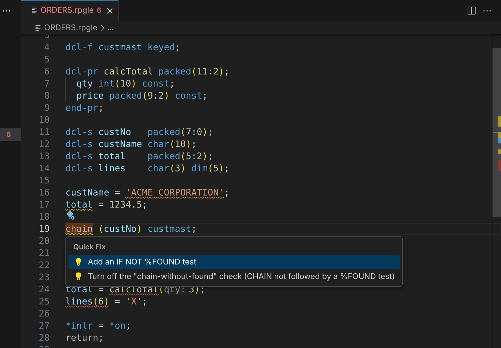

IBM i developers deserve tools that are as pleasant as the ones the rest of the industry takes for granted. Vanthrex started on 3 October 2026 as Silverlake for IBM i, a small VS Code extension to browse libraries and edit source members. Five weeks and about thirty releases later, it is an all-in-one workbench that covers the whole working day of an RPG, CL and SQL developer.

The idea
Install, add a connection, open a member, press Ctrl+S and Ctrl+Alt+C. Everything else should be discoverable from one shortcut (Ctrl+Alt+A) that shows the tools that fit the file you are in. If you are coming from Code for IBM i, Import My Code for IBM i Setup… brings your connections, library lists and compile actions over in one step.
Highlights
- Editing: SEU-style source dates, RPG semantic highlighting, DDS and CL checks, a CL formatter, fixed-to-free conversion and quick fixes.
- Understanding code: call graphs, "who calls each exported procedure", flowcharts, DSPF screen preview and database diagrams.
- Running safely: Production and Read-only connection modes, a self-check, and error messages that tell you what to do next.
- System insight: System Tracker, performance monitor, Library Space Map, Batch Job Timeline, Index Advisor and journal explorer.
- AI with guard rails: the
@vanthrexchat participant only reads, and secrets, personal data and sensitive columns are masked before anything reaches a model. - AS/400 at heart: GO menus, PDM-style lists and green-screen commands for people who grew up on a 5250.

Install
Install it from the VS Code Marketplace (code --install-extension gauravgupta0612.vanthrex-ibmi), or download the .vsix from GitHub Releases and use Extensions → … → Install from VSIX. Full documentation is on the Vanthrex documentation site.
Skills applied
IBM i (RPGLE, CL, DDS, Db2 for i SQL, IFS, PASE), SSH & Mapepire, IBM i Debug Service, QSYS2 services, work management & security (*SECADM), VS Code API, TypeScript, i18n, Marketplace publishing
Release history
- v3.3.0 · Upcoming
Security Audit Journal heat map, Disk Units Map, embedded SQL statistics. - v3.2.1 · 5 November 2026
Fix: IFS Space Map on home folders. - v3.2.0 · 5 November 2026
Visual insights: Library Space Map, Batch Job Timeline, Index Advice Chart. - v3.1.0 · 4 November 2026
DDS checks, CL formatter, RPG semantic highlighting. - v3.0.0 · 4 November 2026
GO menus AS/400-style, import from Code for IBM i, team setup files, code health report. - v2.6.0 · 3 November 2026
About 150 everyday RPG features and 19 new code checks. - v2.5.0 · 3 November 2026
AI with data protection: secrets, personal data and sensitive columns masked. - v2.4.0 · 26 October 2026
Local development: deploy changes to the IFS, compile local files, build projects. - v2.3.0 · 17 October 2026
Create libraries and IFS files from anywhere; automatic reconnect. - v2.2.0 · 15 October 2026
System Tracker: the whole system on one page. - v2.1.0 · 12 October 2026
Security Admin centre for *SECADM users. - v2.0.0 · 12 October 2026
20 new features: RPG code generation for tables, SQL formatter, find & replace across members. - v1.3.0 · 12 October 2026
DSPF screen preview, database diagram, compare two systems. - v1.2.0 · 12 October 2026
Production and Read-only protection, Self-Check, errors that explain themselves. - v1.1.0 · 11 October 2026
Export/import Excel, CSV and JSON; live performance monitor. - v1.0.0 · 11 October 2026
Storage & cleanup advisor, live alerts, message files. - v0.11.0 · 11 October 2026
Work management, users & security, save and restore. - v0.10.0 · 11 October 2026
User interface translated into French, Spanish, German, Italian and Portuguese. - v0.9.0 · 11 October 2026
Journal Explorer, Check Authority, data queues and data areas. - v0.8.0 · 11 October 2026
Index Advisor, compare table data DEV ↔ PROD, message help on hover. - v0.7.1 · 10 October 2026
Run SQL Query from anywhere, with a sortable result grid. - v0.7.0 · 9 October 2026
Who calls each exported procedure of a service program. - v0.6.1 · 5 October 2026
Stable (no longer Preview) on the Marketplace; automated publishing. - v0.6.0 · 5 October 2026
@vanthrexchat assistant: /explain, /document, /review, /modernize; read-only by design. - v0.5.0 · 3 October 2026
Debug Program: full VS Code debug sessions through the IBM i Debug Service. - v0.4.0 · 3 October 2026
Object information page; members always open with the Mapepire SQL engine. - v0.3.1 · 4 October 2026
Documentation site goes online. - v0.3.0 · 3 October 2026
Renamed Vanthrex for IBM i; first Marketplace release; SEU-style source dates. - v0.2.0 · 3 October 2026
System dashboard, Active Jobs and Messages views. - v0.1.0 · 3 October 2026
First release as Silverlake: guided connection, libraries & source browser, quick-action menu.
Latest download: Vanthrex for IBM i v3.2.1
- ⬇ vanthrex-ibmi-3.2.1.vsix (5.1 MB)
Every earlier version is on the Downloads page.